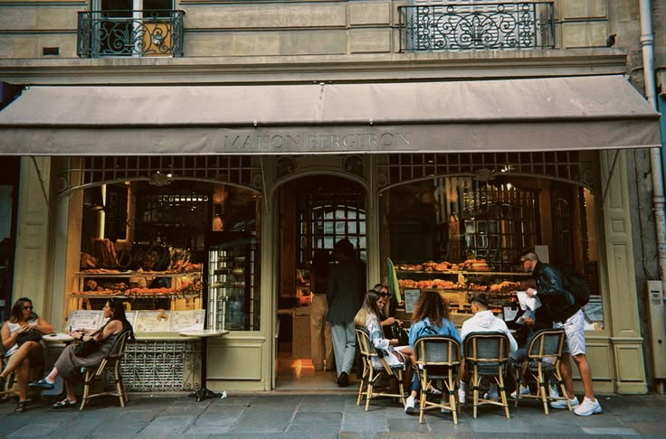

Tentang Kami
Cozy Crumb adalah usaha roti yang sudah bertahan dari tahun 1995. Roti legend original sejak 2019.

Mengapa Memilih Kami?
- Tanpa bahan pengawet
- Rasa manis alami
- Dibuat dengan bahan premium
Cara Pemesanan
- Pilih produk dan jumlah
- Hubungi kami melalui WhatsApp
- Lakukan pembayaran, pesanan dikirim
Produk dan Harga
| Produk | Ukuran | Harga |
|---|---|---|
| Roti Gandum Original | 350 g | Rp12.000 |
| Roti Gandum Strawberry | 400 g | Rp18.000 |
| Roti Gandum Coklat | 600 g | Rp25.000 |

Hubungi Kami
Jl. Raya Purwokerto Lor No. 12
Banyumas, Jawa Tengah
Lokasi Kami
Temukan lokasi usaha Cookies Crumb di Purwokerto.